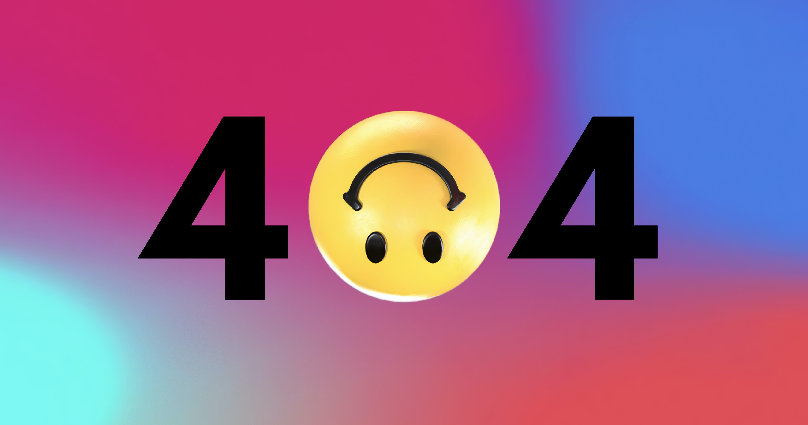

Aviso importante!
Os links "leia mais" são apenas para fins de demonstração. O site MTSBlog é um projeto fictício criado para colocar em prática os conhecimentos adquiridos no curso de programação web da Udemy. O conteúdo deste site, incluindo as imagens utilizadas, é meramente ilustrativo, com exceção de algumas imagens na seção de jogos e celulares, no qual foram utilizadas imagens reais sobre os produtos. O site MTSBlog não possui fins lucrativos e não tem nenhuma relação com as marcas e empresas citadas.
Todos os direitos reservados: Matheus Santos
Última atualização do site: 11 de maio de 2023